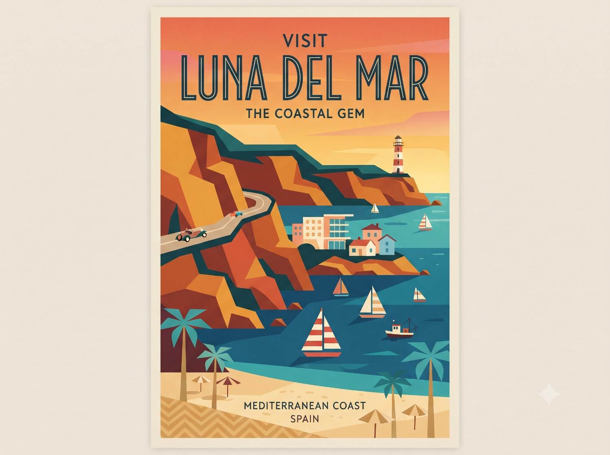

Travel poster prompt
Vintage travel poster
Design a nostalgic coastal destination poster using mid-century shapes, a sunset palette, and integrated lettering.

Copy this prompt
Design a mid-century travel poster for a coastal town, in the style of 1960s tourism prints: flat bold color blocks, simplified geometric shapes for the cliffs and sailboats, a warm sunset gradient sky, and elegant condensed lettering for the destination name integrated cleanly into the composition.
How to use it
- Replace “coastal town” with your destination.
- Describe a few recognizable landmarks or local details.
- Check generated lettering and refine the destination name if needed.